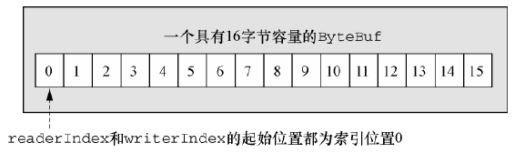

1. 第5章 ByteBuf
网络数据的基本单位总是字节。
Java NIO 提供了 ByteBuffer 作为它的字节容器, 但是这个类使用起来过于复杂, 而且也有些繁琐。
Netty 的 ByteBuffer 替代品是 ByteBuf, 一个强大的实现, 既解决了 JDK API 的局限性, 又为网络应用程序的开发者提供了更好的 API。
1.1. ByteBuf 的 API
Netty 的数据处理 API 通过两个组件暴露
- abstract class ByteBuf
- interface ByteBufHolder
一些 ByteBuf API 的优点
- 它可以被用户自定义的缓冲区类型扩展;
- 通过内置的复合缓冲区类型实现了透明的零拷贝;
- 容量可以按需增长(类似于 JDK 的 StringBuilder);
- 在读和写这两种模式之间切换不需要调用 ByteBuffer 的 flip() 方法;
- 读和写使用了不同的索引;
- 支持方法的链式调用;
- 支持引用计数;
- 支持池化。
1.2. ByteBuf 类 -- Netty 的数据容器
因为所有的网络通信都涉及字节序列的移动, 所以高效易用的数据结构明显是必不可少的。Netty 的 ByteBuf 实现满足并超越了这些需求。
Netty 通过使用不同的索引来简化对它所包含的数据的读写操作。
1.2.1. ByteBuf 是如何工作的
ByteBuf 维护了两个不同的索引: 一个用于读取, 一个用于写入。
- 当从 ByteBuf 读取时, 它的 readerIndex 将会被递增已经被读取的字节数。
- 当写入 ByteBuf 时, 它的 writerIndex 也会被递增。
一个空 ByteBuf 的布局结构和状态。

- 如果打算读取字节直到 readerIndex 达到和 writerIndex 同样的值时会发生什么。
- 在那时, 将会到达“可以读取的”数据的末尾。就如同试图读取超出数组末尾的数据一样, 试图读取超出该点的数据将会触发一个 IndexOutOfBoundsException。
- 名称以 read 或者 write 开头的 ByteBuf 方法, 将会推进其对应的索引, 而名称以 set 或者 get 开头的操作则不会。
- 以 set 或 get 开头的方法将在作为一个参数传入的一个相对索引上执行操作。
- 可以指定 ByteBuf 的最大容量(默认的限制是 Integer.MAX_VALUE)，试图移动写索引(writerIndex)超过这个值将会触发一个异常。
1.2.2. ByteBuf 的使用模式
- 5.2.2 ...